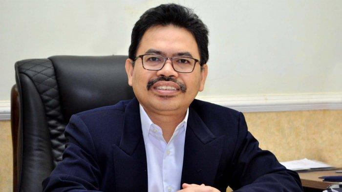

Memahami Anak Muda
Oleh: Mujiburrahman Rektor Universitas Islam Negeri (UIN) Antasari
BANJARMASINPOST.CO.ID - Sejak disahkannya RUU Cipta Kerja 5 Oktober 2020 silam, gelombang demonstrasi terjadi di mana-mana. Selain kaum buruh, yang menonjol di antara demonstran itu adalah anak-anak muda, dari pelajar hingga mahasiswa. Apa kiranya yang membuat mereka sangat bersemangat berunjuk rasa?
Sebab pertama mungkin melekat dalam diri anak muda itu sendiri. Darah muda itu, kata Rhoma Irama, “selalu merasa gagah, tak pernah mau mengalah; maunya menang sendiri, walau salah tak peduli; berpikirnya sekali saja, tanpa menghiraukan akibatnya.” Tidak semua remaja seperti yang digambarkan lirik lagu ini, tidak pula semua demonstran, tetapi tak syak lagi, sebagian mereka memang tampak seperti itu. Hal ini mungkin karena mereka masih berada dalam proses transisi dari masa kanak-kanak menuju kepribadian dewasa yang matang.
Sebab kedua adalah ketidaknyamanan psikologis seperti stres dan depresi di masa pandemi Covid-19. Ketika pertemuan banyak orang dibatasi dan pembelajaran nyaris semuanya daring, maka para remajalah yang sesungguhnya paling tertekan. Ngumpul-ngumpul dan menjalin pertemanan memang tabiat anak muda. Dia suka berbagi, setia kawan dan lebih mendengarkan temannya ketimbang orangtuanya. Sendiri sepi di rumah, hanya ditemani gawai atau komputer sungguh berat baginya. Demonstrasi tampaknya membuka pintu bagi anak muda untuk saling berbagi dan bertemu.
Ketiga, anak muda pada umumnya masih murni idealis. Dia belum memikul tanggungjawab sosial yang berat. Kepentingannya lebih berorientasi ke masa depan. Dia khawatir dan ragu apakah bisa mencapai hidup sejahtera di masa depan. Karena itu, ketika dia mengetahui (sampai batas yang mungkin diketahuinya) bahwa ada suatu masalah publik yang bisa merugikan banyak orang di masa depan, dia terpanggil untuk mencegahnya. Boleh jadi pula, bagi sebagian anak muda, menyalahkan pemerintah lebih nyaman dan memuaskan hati ketimbang menyalahkan diri sendiri yang belum mantap menatap masa depan.
Keempat, ada dorongan yang kuat dalam diri anak muda agar diterima dan diakui oleh lingkungan, baik oleh teman-temannya ataupun orang dewasa. Media sosial yang membuka peluang bagi tiap orang untuk tampil virtual di publik semakin memicu hasrat ini. Dalam kadar yang tinggi, anak muda ingin dianggap sebagai pahlawan, pejuang tanpa pamrih yang membela kebenaran dan keadilan. Hasrat kepahlawanan ini bahkan revolusioner, yakni ingin mengubah tatanan yang mapan. Anak muda saya kira sepakat dengan Karl Marx ketika ia mengatakan, “Para filosof hanyalah menafsirkan dunia dengan berbagai cara; padahal masalah pokoknya adalah, bagaimana mengubahnya.”Mungkin masih ada lagi sebab-sebab lainnya, tetapi paling tidak empat sebab di atas kiranya dapat membantu yang tua memahami yang muda. Tugas orangtua adalah mendidik dan mendampingi yang muda agar lebih matang dan siap menyongsong masa depan. Tentu saja, dari segi perubahan sosial, pengalaman orangtua tidak sama dengan pengalaman anaknya. “Anakmu bukanlah milikmu. Ia adalah putra kerinduan Sang Hidup pada dirinya sendiri,” kata Khalil Gibran. Namun Gibran juga mengatakan, orangtua adalah busur dan anak adalah anak panah. Keduanya saling terkait. Busur tanpa anak panah, tak berguna. Anak panah tanpa busur, tak bisa terbang melesat.
Berbagai kejadian selama demonstrasi, baik yang tertib ataupun anarkis, adalah pelajaran bagi yang tua dan yang muda. Anak-anak muda perlu belajar sejarah politik negeri ini secara lebih lengkap, tidak hanya melihat gambaran sekilas tentang gerakan mahasiswa yang seolah menjadi kekuatan paling menentukan. Para psikolog memang mengatakan, manusia cenderung menilai kemampuan dirinya secara berlebihan. Kelak setelah banyak ilmu dan pengalaman, dia baru sadar bahwa dirinya tak sehebat yang dia pikirkan. Jalaluddin Rumi mengatakan, “Dulu aku pintar, karena itu aku ingin mengubah dunia. Hari ini aku bijak, karena itu aku berusaha mengubah diriku sendiri.”
Adapun kita yang tua, perlulah pula merenung, apakah kita ini sudah dewasa ataukah tua-tua keladi, makin tua makin gatal? Suara-suara anak muda, boleh jadi adalah suara-suara kita juga, yang selama ini terbenam sunyi dan terlupakan. Mungkin pula yang muda itu salah dan berlebihan. Sopan santun diabaikan, hukum dilanggar. Namun, dalam kesalahan yang muda, sedikit banyak terselip tanggung jawab yang tua. Nabi SAW mengingatkan, “Bukanlah termasuk golongan kami jika yang tua tidak menyayangi yang muda, dan yang muda tidak menghormati yang tua.” (*)